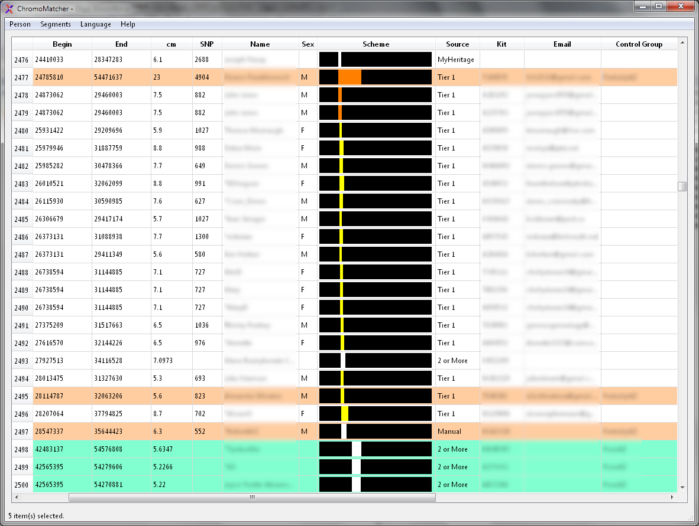
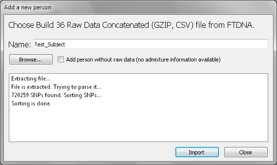

| ChromoMatcher |
Download Binary Distribution of ChromoMatcher version 0.11 for Windows (Vista or newer)
ChromoMatcher is a free and universal chromosome browser. It accepts data from GEDmatch, FTDNA and MyHeritage and represents it in a unified way. By using this tool you may see how thousands of matching segments collected from different sources distribute over your DNA. Additionally you may assign segments to various control groups, add comments to segments and examine their admixture results using different calculators.
How it looks like:

At first you need to create a new person. Go to Person menu and choose Add. You will see such dialog:
You may click Browse button and choose raw data file from FTDNA or check Add person without raw data (then no admixture information will be available). On FTDNA site go to myFTDNA → Family Finder → Download Raw Data and choose this file (you do not need to unpack it):
Set person's name, press Import button and you person will be created. Then click Close and choose you newly created person in Persons menu.
Go to segments menu and click Import. You will see various options how to populate ChromoMatcher with data. At first you need to download segments data from various sources.
On FTDNA site go to myFTDNA → Chromosome Browser and click Download All Matches to Excel (CSV Format).
On MyHeritage site go to Review DNA Match page or Chromosome Browser and choose Advanced Options → Download shared DNA info. Unfortunately, you can't download more than 7 matches at a time from MyHeritage.
There are two ways how to populate ChromoMatcher with GEDmatch data. You may use People who match one or both of 2 kits tool. Save your result as Web Page without images.
Also you may use Tier 1 Matching Segment Search tool. It is available for additional payment but I highly recommend to buy it and you will get the best data source possible and you will support GEDmatch as well. In this case DNA segments will have different color and segments of the same color are likely to have common ancestor. You need to save web-page with Tier 1 data as in previous example.
When you have collected all required data, go to Segments menu and click Import. Such dialog will appear:
There are several options what to do with duplicates. If you choose Ignore, there will be no checks on adding new segments and duplicates may appear. If you choose Overwrite, previous data will be overwritten (rarely used). Preserve will preserve any segments which already exist. You may choose Minimum segment length - otherwise you may import a lot of too short segments. Segment is considered unique if chromosome, positions, name and GEDmatch kit (for GEDmatch segments) are the same. These values may be different even for the same segment from the same source (GEDmatch Tier 1 data is more precise than GEDmatch 2 or more).
Also you may import segments manually by Segments → Add Manual menu. You will see the same window if you double click a segment in a table - than you may edit it.
Control Group management and creation is easy with Segments → Manage Control Groups menu. Also you may choose Segment → Find (or CTRL+F) to find segment by name, kit and so on. CTRL+A selects all segments, DEL deletes selected (if you choose Yes in popped window).
If you right click on a segment you will see context menu.
First tho options are available for any selection, other only if one segment is selected. Admixture is not available if you added a person without raw data. Select All of the Same Kit and Control Group available only if segment has kit number or control group.
If you choose Admixture you will see such window:
Please note that admixture results are only a small step in a long journey which includes a lot of forms of investigation (including 'classic' genealogy). Do not be 100% confident about it (especially when you examine only a small segment of DNA which hardly exceeds 10 SNP with predefined admixture weights).
This program is distributed under GNU GPLv3. It has some 3-rd party components:
Dodecad Ancestry Project by Dienekes Pontikos - see README.txt for licensing information. Distro may be downloaded here - http://dodecad.blogspot.com.by/2011/09/do-it-yourself-dodecad-v-21.html
Eurogenes Genetic Ancestry Project - I haven't found license information with admixture data (it is available for download) so I had to ask a permission to include it in my project (and got it). I suppose you have to ask them if you have plans for redistributing their data.
QuaZIP - Qt/C++ wrapper for Minizip by Sergei Tachenov and contributors.
zlib library.
Qt library (Open Source).
If you want to contribute to my project please note that it has CLA (Contributor License Agreement) - it is included in the distro.
If you use any 3-rd party data with this project (segments information, other admixture calculators and so on) – it is your responsibility to check if you have a permission to use this data.
I hope my work will save you a lot of time and will cause a better understanding of your origins.
Good luck in your research!
htotatut at gmail dot com
{kind=link}
{kind=link}
{kind=link}
{kind=link}
{kind=link}
{kind=link}
{kind=link}
{kind=link}
{kind=link}
{kind=link}